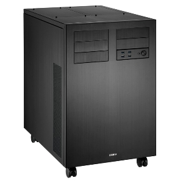
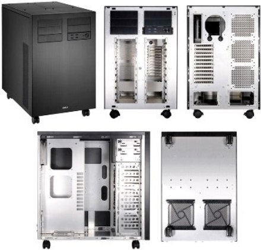

Компьютерный корпус весом в 13 кг.

Компания LianLi занимается разработкой поистине громадного компьютерного корпуса под кодовым названием PC-D8000. Поискать такой корпус можно там же где продают
компьютеры в Гомеле.
Новинка имеет огромные размеры 405 х 628 х 572,
при этом общий вес корпуса PC-D8000 составляет тринадцать килограмм. (При заказе возможна доставка в Гомель.) В компьютерном корпусе предусмотрена установка материнских плат формата HPTX (EVGASR-X).
В PC-D8000 имеется место для установки шести приводов в специально для них предназначенные 5,25-дюймовые слоты. Для установки же HDD и SSD - предусмотрены двадцать
3.5 дюймовых отсеков. Для блоков питания предусмотрено 2 слота. Место для видеокарты вполне комфортное, позволяет использовать графические адаптеры длинной до 41-го
сантиметра. Особое внимание уделено системе охлаждения, насчитывающей аж 18 кулеров. На лицевой стороне присутствуют 4 разъема USB 3.0, кнопка для включения системного блока и перезагрузки.
Корпус PC-D8000 в магазинах Германии можно уже сейчас приобрести за «скромную» цену, примерно около 330 евро.

Читайте также:
Состовляющие ПК. Корпус.
Компьютерный моддинг и все его положительные стороны.
Следующая статья:
Автомобильные видеорегистраторы.